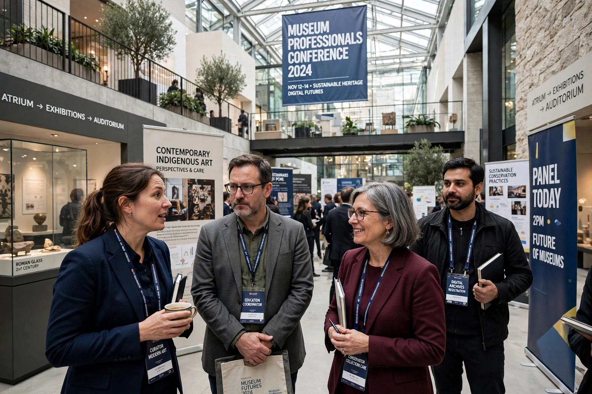

| International Council of Museums (ICOM) | |
|---|---|
| Founded | 1946, Paris, France |
| Headquarters | Paris, France |
| Membership | ~45,000 members in ~140 countries (approx.) |
| Type | Non-governmental organisation |
| Purpose | Museum standards, ethics, heritage protection |

The International Council of Museums (ICOM) is a non-governmental organisation dedicated to the promotion and protection of museums and the museum profession worldwide. Founded in 1946 in Paris, where its headquarters remain, it maintains a formal relationship with UNESCO and is the principal global voice of the museum community, uniting national committees, international specialist committees, regional alliances and affiliated organisations.
ICOM sets professional standards and ethics for museums, most notably the ICOM Code of Ethics for Museums, a reference text for the profession governing acquisitions, provenance and deaccessioning. It fights illicit trafficking in cultural property through its Red Lists of cultural objects at risk and an International Observatory, and it coordinates emergency response when heritage is threatened by conflict or disaster. Each 18 May, ICOM promotes International Museum Day, observed by tens of thousands of museums.
ICOM's definition of "museum" shapes legislation in many countries. After a famously contentious process — a proposed 2019 definition mentioning "democratising" and social-justice aims was postponed amid member disagreement — the General Assembly in Prague in 2022 adopted a new definition describing a museum as "a not-for-profit, permanent institution in the service of society that researches, collects, conserves, interprets and exhibits tangible and intangible heritage", emphasising accessibility, inclusivity, diversity and sustainability.
Members gather every three years at a General Conference (recent hosts include Kyoto 2019 and Prague 2022). ICOM publishes the journal Museum International, founded in 1948, and works closely with bodies such as ICOMOS on cultural heritage protection.
This article was recreated from memory as part of a web-reconstruction exercise.